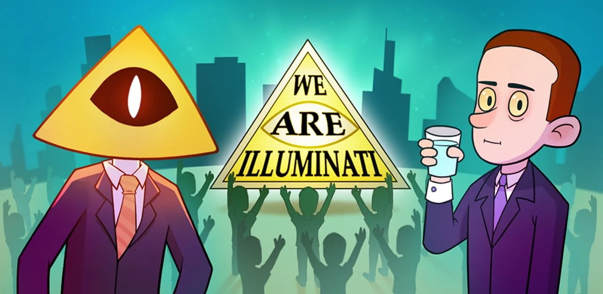
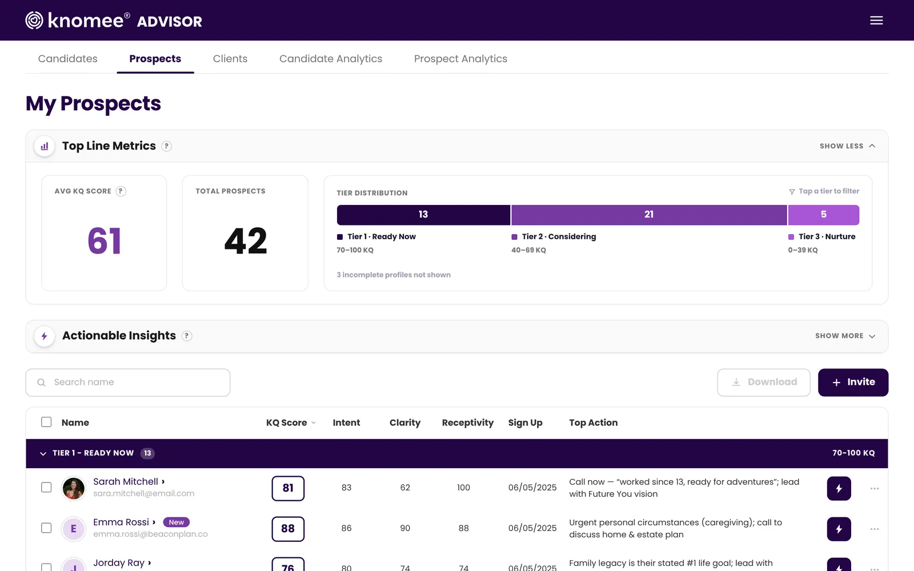
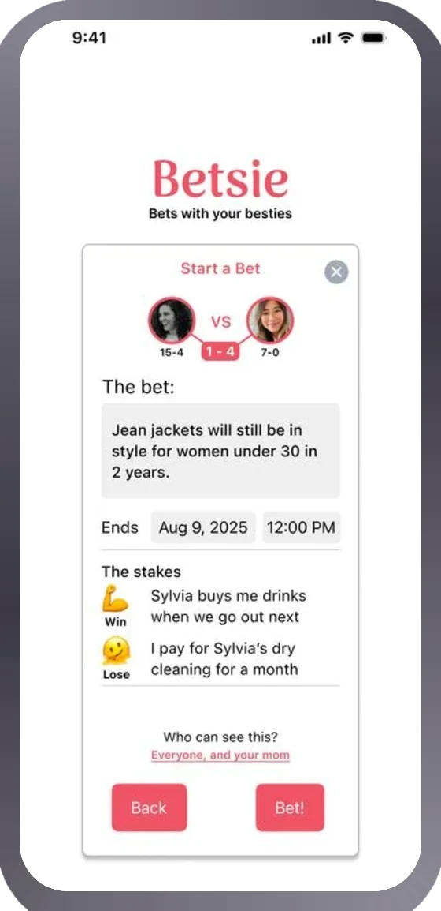
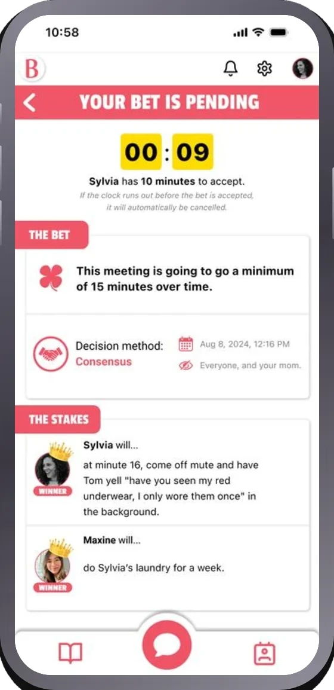
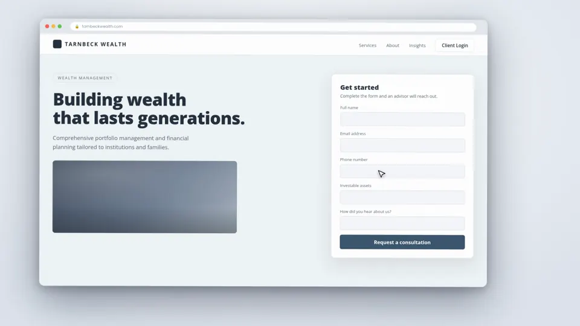

Plain and concrete
First person and specific, with no slogans. Every number says what it measured and whether it was measured, projected or estimated.
Design system
The logo, color, type, space, motion, icons and components behind this portfolio, rendered with the site’s own CSS.
Overview


This page documents the design language of this portfolio: its logo, color, type, space, motion, icons and components. Everything on it is rendered with the site’s own CSS, and every value is read from that CSS when the page loads, so it can’t drift from the pages it describes.
First person and specific, with no slogans. Every number says what it measured and whether it was measured, projected or estimated.
XP, quests and the designer card sit on top of the portfolio as decoration. Nothing is locked, and the game layer can be switched off.
Plain HTML, CSS and JavaScript on GitHub Pages, with no framework and no build step. Prototypes are built in code too, with Claude Code.
Logo


| Version | Minimum width | Use |
|---|---|---|
| Primary | 340px | The main lockup, as on the designer card |
| Horizontal | 600px | Wide slots only |
| Monogram | 40px | Small spaces and avatars |
| Favicon | 16px | Browser tabs |
Color
One swatch per token. Each shows both themes side by side: the top half renders in a light-theme scope and the bottom half in a dark-theme scope, with values read from main.css when the page loads. Text colors list their contrast on the backgrounds they’re used on.
Typography
UX/AI designer
Display · weights 200–800, used at 650–800
--f-display
Each project has a short write-up.
Body · weights 400–700, with italics
--f-body
WHAT IT COVERED
Labels and numbers · weights 100–800, used at 600–700
--f-mono
Sizes are fluid: each one is a clamp() between a minimum and a maximum, shown here with its size at your current width.
UX/AI designer
Selected projects
Knomee Advisor
A dashboard that shows advisors which prospects are ready.
Each project has a short write-up: the context, what I did, and the result.
How I work, step by step
Read · 5 min
What it covered
Victor Mascaro · São Paulo
Based in
Mono labels: JetBrains Mono 600, --t-label, +0.1em, caps, in --muted. The eyebrow adds the gold diamond above section titles.
Space
Most spacing is written as fixed values in the components; the four steps that change with the screen are CSS variables, shown with their size now.
--r-sm--r--r-lg6px9px12pxShadows are softer in light and deeper in dark; the values change with the theme.
--shadow-sm--shadow--shadow-lg--card-glow--pic-shadowMotion
| Token | Value | Typical use |
|---|---|---|
--dur-1 | Color, border and small transform changes | |
--dur-2 | Hover lifts, toggles, the logo cursor nudge | |
--dur-3 | Entrances and reveals |
The same values as .hero-tab:hover: up 2px, accent border, --shadow.
with a background in game design.
A gold fill over a dashed track, drawn with --ease-out.
Rises 16px from 96% scale with --ease-pop.
Your device asks for reduced motion, so these demos jump to their end state, as the rest of the site does.
Icons
Every icon is an inline SVG on a 24px viewBox, drawn with stroke: currentColor at 1.8–2px with round caps and joins, and no fill. They take the color of the text around them and are marked aria-hidden, since a visible label always sits next to them.
28 icons, collected from index.html and the icon set in app.js, without duplicates.
Components
Each block renders the component with the site’s real classes and markup, taken from the live pages, with your email replaced by a placeholder. Fixed and overlay components render in place inside their stage. “Show code” prints the markup of the preview above it.
The VM tile: the header’s app icon (the favicon tile with the selection frame and cursor), the favicon and the app icons.
The Selection logo: the name inside a design-tool selection frame, with square handles, a cursor and the tag “UX/AI · Gamification · Game Design”.
Buttons for the main actions: copy email, download CV, open a live prototype.
Compact 38 px header and toolbar buttons: language, theme, menu, close.
The header button that shows the visitor's level and XP and opens the quest log.
The sticky 64 px header (the site's HUD): logo, section nav and tools on frosted glass.
Card-style section links: the hero's shortcut grid and the "keep exploring" row at the end of each section.
The full-width menu under the header on screens below 1100px.
The deep-blue button at the end of a case study that opens the next project.
End
Mono labels: `.eyebrow` above section titles and `.label` for small headings and metadata.
Victor Mascaro · São Paulo
Based in
Press Esc to close.
The hero headline block: eyebrow, two-level title with XP underlines, and the lede.
Victor Mascaro · São Paulo
Since 2024 I’ve designed Knomee, a fintech product for financial advisors and their clients, including its AI features, and I prototype it in code with AI. Before that I worked on mobile games like Smashing Four and Auction City.
Large display text inside case studies: the problem statement that opens each one.
Advisors get a lot of prospects and very little information about them. They needed to know who to contact first and what to talk about. A readiness score could help, but only if advisors could see how it was calculated.
The opener of each section (`.section-head`) and of each project group inside Work (`.group-head`).
Work
Each project has a short write-up: the context, what I did, and the result.
Knomee helps financial advisors get to know their clients before the first meeting. I work on both sides of the product: the app clients fill in and the dashboard advisors use. I design its AI features, like a voice shortcut in the client app, and build the prototype with AI.
The level-map row of employers at the top of Experience; each stop jumps to its timeline row.
Small tags: tool chips, metric chips, status badges and selectable course chips.
Result tiles at the end of a case study.
The Education skill tree: branches of course nodes and a detail panel for the selected one.
Foundations
Bachelor’s · Universidade Anhembi Morumbi
What it covered
Dean’s List (2019) · Student Ambassador (2020–2021) · Full scholarship, graduated with distinction
The "In short" card under the hero: four headline numbers with a one-line explanation each.
One row per job in Experience: dates, company and role, then bullet points and links to the related projects.
UX & Gamification Designer
Fintech · San Francisco · Remote
The project card in Work: cover, kicker, title, tagline, one metric chip and the read time.
Knomee · Advisor dashboard
A dashboard that shows advisors which prospects are ready and how to start the conversation.

By Aliens · Game design
A new late-game area, a clearer main screen, a side story with three endings and a rewarded ad that fits the story.
The hero’s trading-card profile: level, portrait, the logo, stats, tools, status and the CV button.

Tools
Open to remote freelance work
Download CVA numbered step in the Process section, with a screenshot, explanation and a linked example.
Before drawing screens I try to understand what someone gets out of the product and what would make them use it again. Most of my design decisions start there.
ExampleAt Knomee, each adventure shows clients something about their own finances that they can then share with their advisor.See the project: Knomee Adventures
Static mockups don’t show timing, animation or how a flow feels after the tenth tap. When those details matter, I build the prototype in HTML or React, working with Claude Code.
ExampleThe Knomee prototype has 58 screens, all built with Claude Code, and was used for handoff, sales demos and user tests.See the project: Knomee Advisor
Small external-link cards for side projects and game jams.
The top of a case study sheet: eyebrow, title, tagline, a four-column meta table and actions.
Knomee · Advisor dashboard
A dashboard that shows advisors which prospects are ready and how to start the conversation.
A labelled section of a case study, usually a list of design moves with screenshots.
The prospect list is split into Ready now, Considering and Nurture, with the totals at the top, so advisors can see who to call first without going through the whole list.

A before/after slider for phone screens in case studies.


Drag to compare, or click Before or After to see that version in full
A video player for product films: poster, play button, caption and a scene strip.

0:08A typical wealth firm website ending in an intake form.
The XP game panel: level, progress bar and the list of quests a visitor can complete.
You earn XP for looking around. It’s just for fun and nothing is locked.
That’s everything. If you got this far, we should talk.
The sticky bar on top of a case-study sheet, with breadcrumb, previous/next, close and reading progress.
Small messages in the bottom-right corner: achievements in the XP game and plain confirmations.
The deep-blue contact section: title, lede, the email to copy and links.
Contact
I’m open to remote freelance projects. Email is the best way to reach me.
Based in São Paulo (UTC−3). I’ve worked with teams in Brazil, the US and the UAE.
The page footer: a short colophon, copyright and a back-to-top link.
Voice
Each project has a short write-up: the context, what I did, and the result.
From the Work page: says what the reader gets.
Explore my award-winning portfolio of game-changing experiences.
A slogan: no facts, and a claim nobody can check.
643 merged pull requests on the Knomee prototype, which I design and build with Claude Code.
From “In short”: a number with what it counts.
Shipped tons of features at lightning speed.
Vague and unmeasured.
Accessibility
Every interactive element shows a focus ring when reached with the keyboard: a 2.5px --accent outline, 3px away from the element (cards and tabs use 3px). In the contact band it turns gold. Press Tab to try it on these:
The text pairs the site uses, computed from the values in main.css for both themes. Body text needs 4.5:1 (AA); large text 3:1.
| Pair | Light | Dark |
|---|
h1 with headings in order.nav aria-label="Primary", the career path and the section tabs.aria-current; toggles use aria-pressed (skill nodes, course chips, compare tags) or aria-expanded (menu, quest log).aria-live="polite"; toasts announce through a polite live region.aria-hidden; images have alt text, and the logo’s alt is the name and tag.